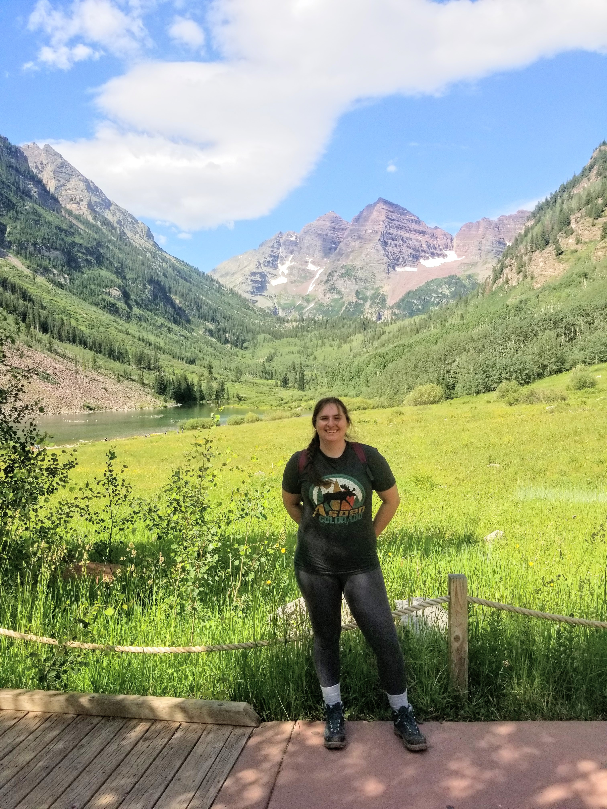

About
I am an astrophysicist at Curtin Institute of Radio Astronomy in Perth, Western Australia. I use multiwavelength observations to find and understand the compact remnants of exploded stars, particularly black holes and neutron stars, which might be found in dense clusters of stars.
I got my Bachelor of Science in physics at the University of Michigan-Dearborn in 2014, and my PhD in astrophysics in July 2020 from Michigan State University. From 2020 until 2023, I was a postdoctoral fellow at McGill University in Montréal, Québec, Canada, and from 2023 to 2024 I was a NASA Einstein Fellow at Wayne State University in Detroit, Michigan.
Research Interests
I use data from as many telescopes and wavelengths as possible, ranging from radio up to gamma ray. I'm interested in interpreting the high energy astrophysical signatures of black holes, and also understanding the environments they form in. By leveraging both optical studies of dense stellar environments, and radio/X-ray studies of objects undergoing accretion, I can probe the population of candidate black holes in globular clusters, and try to understand how they formed.
I am also the co-chair of Rubin Observatory's Stars, Milky Way and Local Volume Collaboration, and the Star Clusters Science Working Group. One of the things I'm most excited for is the opportunity to expand our understanding of extragalactic globular clusters, and using modern techniques like machine learning to identify them quickly and accurately.
The Dead Stars Society
The Dead Stars Society is a student-oriented research group for undergraduate students from under-resourced institutions. Our focus is on empowering the next generation of scientists through data intensive astronomy research opportunities.
We are supported by the Legacy Survey of Space and Time Discovery Alliance and the Michigan Space Grant Consortium. Read more about the program and view our analysis guides here .
Github ORCiD
